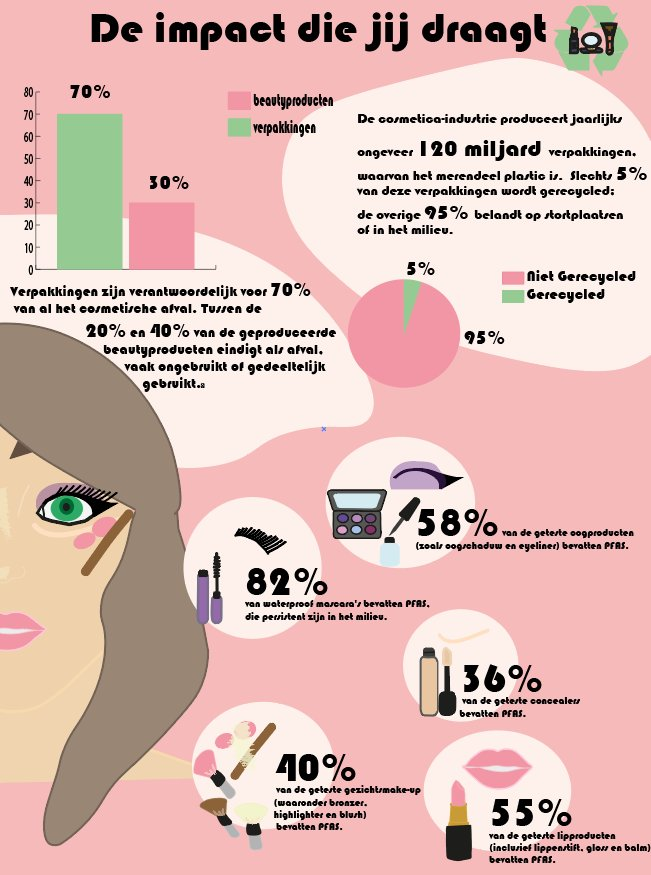
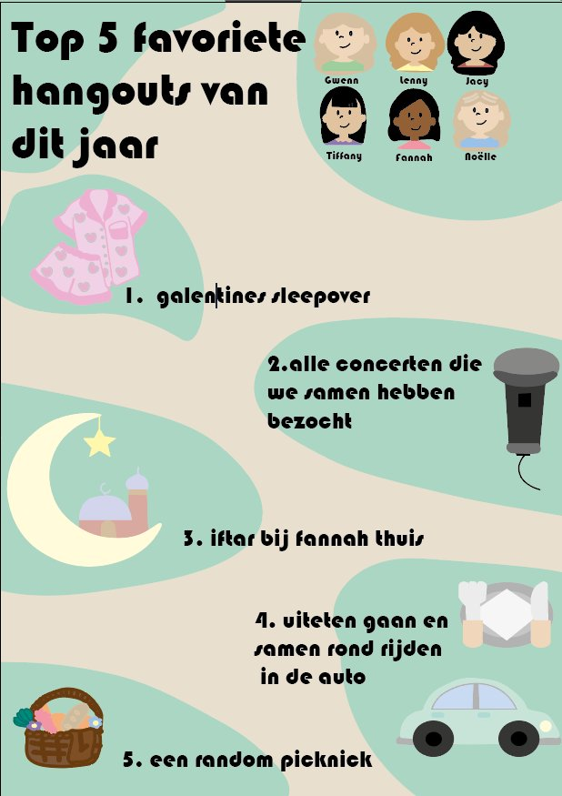
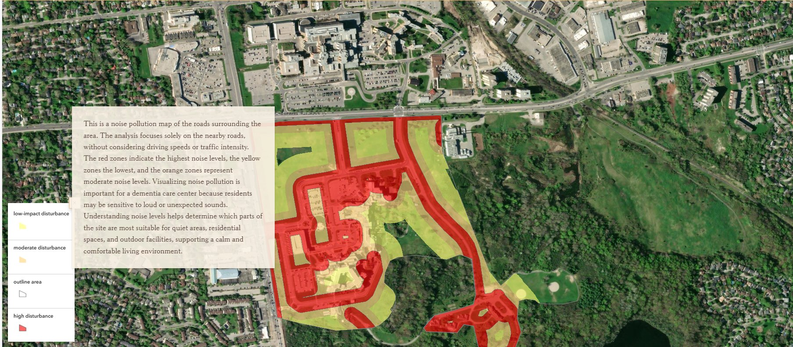
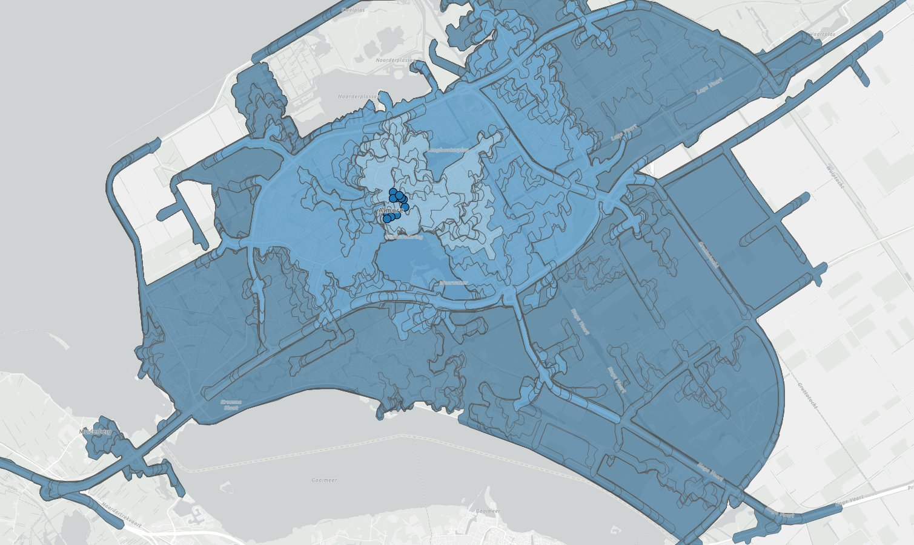
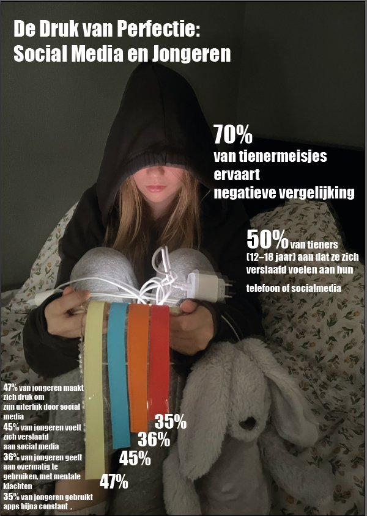

Creations
Hier staan dingen die ik op school heb gemaakt, van designprojecten tot GIS-opdrachten en creatieve werken waar ik trots op ben.
Waar ik dit leer
Op deze plekken studeer ik en maak ik creaties voor school. Van mijn hogeschool tot bibliotheken en gezellige cafés in Almere.
Mijn Creaties
Een overzicht van mijn werk — van designprojecten en GIS-analyses tot foto's en video's.

DesignPoster Ontwerp
Schoolopdracht waarbij ik een infographic moest maken over een maatschappelijk probleem.

DesignEen poster over jezelf
Ik moest voor een schoolopdracht een poster over mezelf maken waarbij ik ook alle icoontjes zelf moest tekenen.

GISGeluidsanalyse
Een GIS-analyse waarbij ik heb gekeken hoeveel last ze van geluid zouden hebben in dit gebied.

GISAfstandsanalyse Almere
Schoolproject waarbij ik een afstandsanalyse had uitgevoerd om te kijken hoe ver een vrachtwagen moet reizen naar de supermarkten.

Foto'sPhotoshop
Voor school moest ik in een foto een visualisatie maken over een maatschappelijk probleem.

Video
Een korte video waarbij ik een toelichting geef over de situatie in de Ossola Vallei met visuele animaties.